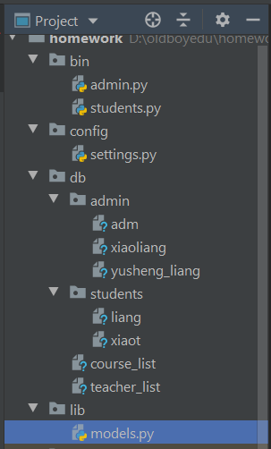

原文出处:本文由博客园博主梦想一步登天提供。
原文连接:https://www.cnblogs.com/june-L/p/11741598.html
原文连接:https://www.cnblogs.com/june-L/p/11741598.html
1、系统目录结构

文件夹注解：
bin--系统管理员和学生的主程序代码
config--系统的配置文件
db--系统的数据文件
admin--管理员的数据文件
student--学生的数据文件
lib--系统的公共类文件
1、admin.py
主要用于管理员注册、登录系统、创建授课老师、创建课程等操作。


1 #!/usr/bin/env python
2 # -*- coding:utf-8 -*-
3 """
4 管理员可操作的方法
5 """
6 import os
7 import sys
8 sys.path.append(os.path.dirname(os.path.dirname(__file__)))
9 import pickle
10 import os
11 from lib import models
12 from config import settings
13 from lib.models import Course
14 from lib.models import Teacher
15 from lib.models import Admin
16
17
18 def create_teacher(admin_obj):
19 """
20 管理员创建老师
21 :param admin_obj:
22 :return:
23 """
24 teacher_list = []
25 while True:
26 teacher_name = input("请输入老师的姓名：(q退出)")
27 if teacher_name == "q":
28 break
29 teacher_age = input("请输入老师的年龄：")
30 obj = models.Teacher(teacher_name, teacher_age, admin_obj)
31 teacher_list.append(obj)
32 if os.path.exists("teacher_list"): #判断老师列表是否存在
33 exists_list = pickle.load(open(settings.TEACHER_DB_DIR, 'rb'))
34 teacher_list.extend(exists_list)
35 pickle.dump(teacher_list, open(settings.TEACHER_DB_DIR, 'wb'))
36
37 def create_course(admin_obj):
38 """
39 管理员创建课程
40 :param admin_obj:
41 :return:
42 """
43 teacher_list = pickle.load(open(settings.TEACHER_DB_DIR, 'rb'))
44 for num, item in enumerate(teacher_list, 1):
45 print(num, item.name, item.age, item.create_time, item.create_admin.username)
46 course_list = []
47 while True:
48 name = input("请输入课程名(q退出):")
49 if name == "q":
50 break
51 cost = input("请输入课时费:")
52 num = input('请选择老师(序号):')
53 obj = models.Course(name, cost, teacher_list[int(num) - 1], admin_obj)
54 course_list.append(obj)
55 if os.path.exists(settings.COURSE_DB_DIR): #判断课程列表是否存在
56 exists_list = pickle.load(open(settings.COURSE_DB_DIR, 'rb'))
57 course_list.extend(exists_list)
58 pickle.dump(course_list, open(settings.COURSE_DB_DIR, 'wb'))
59
60 def look_course():
61 """
62 管理员查看课程表
63 :return:
64 """
65 course_list = pickle.load(open(settings.COURSE_DB_DIR, 'rb'))
66 for num, item in enumerate(course_list, 1):
67 print(num, item.course_name, item.cost, item.teacher.name, item.create_time, item.create_admin.username)
68
69 def to_login(user, pwd):
70 """
71 管理员登录的方法
72 :param user:
73 :param pwd:
74 :return:
75 """
76 if os.path.exists(os.path.join(settings.BASE_ADMIN_DIR, user)):
77 # 从文件中将管理员对象读取出来（里面封装了用户信息以及提供了登录访求）
78 admin_obj = pickle.load(open(os.path.join(settings.BASE_ADMIN_DIR, user), 'rb'))
79 if admin_obj.login(user, pwd):
80 print('登录成功！')
81 while True:
82 sel = input("1、创建老师；2、创建课程; 3、查看课程表(q退出程序) \n >>>>")
83 if sel == '1': #创建老师
84 create_teacher(admin_obj)
85 elif sel == '2': #创建课程
86 create_course(admin_obj)
87 elif sel == '3':
88 look_course()
89 else:
90 break
91 else:
92 return 1
93 else:
94 return 0
95
96 def to_register(user, pwd):
97 """
98 管理员注册的方法
99 :param user:
100 :param pwd:
101 :return:
102 """
103 admin_obj = models.Admin()
104 admin_obj.register(user, pwd)
105
106 def main():
107 inp = input("1、管理员登录； 2、管理员注册；\n >>>>>")
108 user = input('请输入用户名：')
109 pwd = input('请输入密码：')
110 if inp == '1':
111 ret = to_login(user, pwd)
112 if ret == 1:
113 print("密码错误！")
114 elif ret == 0:
115 print("用户不存在！")
116
117 elif inp == '2':
118 to_register(user, pwd)
119
120
121 if __name__ == "__main__":
122 main()
2、students.py
主要是学生注册、登录系统，选课等操作。
1 #!/usr/bin/env python
2 # -*- coding:utf-8 -*-
3 """
4 学生可操作的方法
5 """
6 import os
7 import sys
8 import pickle
9 sys.path.append(os.path.dirname(os.path.dirname(__file__)))
10
11 from lib.models import Course
12 from lib.models import Admin
13 from lib.models import Teacher
14 from config import settings
15 from lib import models
16
17 def to_select_course(student_obj):
18 """
19 学生选课的方法
20 :param student_obj:
21 :return:
22 """
23 course_list = pickle.load(open(settings.COURSE_DB_DIR, 'rb'))
24 for num, item in enumerate(course_list, 1):
25 print(num, item.course_name, item.cost, item.teacher.name)
26 while True:
27 num = input("请选择课程(q退出)：")
28 if num == 'q':
29 break
30 select_course_obj = course_list[int(num) - 1]
31 if select_course_obj not in student_obj.course_list:
32 student_obj.course_list.append(select_course_obj)
33 pickle.dump(student_obj, open(os.path.join(settings.BASE_STUDENTS_DIR, student_obj.username), 'wb'))
34
35 def course_info(student_obj):
36 """
37 查看学生已选择的课程
38 :return:
39 """
40 for item in student_obj.course_list:
41 print(item.course_name, item.teacher.name)
42
43 def to_register(user, pwd):
44 """
45 学生注册
46 :param user:
47 :param pwd:
48 :return:
49 """
50 obj = models.Student()
51 obj.register(user, pwd)
52
53 def to_login(user, pwd):
54 """
55 学生登录
56 :param user:
57 :param pwd:
58 :return:
59 """
60 if os.path.exists(os.path.join(settings.BASE_STUDENTS_DIR, user)):
61 student_obj = pickle.load(open(os.path.join(settings.BASE_STUDENTS_DIR, user), 'rb'))
62 if student_obj.login(user, pwd):
63 inp = input('1、选课；2、上课；3、查看已选课程 \n >>>')
64 if inp == '1':
65 to_select_course(student_obj)
66 elif inp == '3':
67 course_info(student_obj)
68 elif inp == '2':
69 pass
70 else:
71 print('密码错误')
72 else:
73 print("学生用户不存在")
74
75 def main():
76 inp = input("1、学生登录；2、学生注册；\n >>>")
77 user = input("请输入学生用户名：")
78 pwd = input("请输入登录密码：")
79 if inp == '1':
80 to_login(user, pwd)
81 elif inp == '2':
82 to_register(user, pwd)
83
84
85 if __name__ == "__main__":
86 main()
3、settings.py
系统主要路径参数的设置文件
1 #!/usr/bin/env python
2 # -*- coding:utf-8 -*-
3 import os
4 #定义路径变量
5 BASE_DIR = os.path.dirname(os.path.dirname(__file__))
6 BASE_ADMIN_DIR = os.path.join(BASE_DIR, "db", "admin")
7 BASE_STUDENTS_DIR = os.path.join(BASE_DIR, "db", "students")
8 TEACHER_DB_DIR = os.path.join(BASE_DIR, "db", "teacher_list")
9 COURSE_DB_DIR = os.path.join(BASE_DIR, "db", "course_list")
4、models.py
系统公共类的代码实现
1 #!/usr/bin/env python
2 # -*- coding:utf-8 -*-
3 """
4 用于存储老师、管理员、学生类
5 """
6
7 import time
8 import pickle
9 from config import settings
10 import os
11
12
13 #定义老师类
14 class Teacher:
15 """
16 封装老师的相关信息
17 """
18 def __init__(self, name, age, admin):
19 self.name = name
20 self.age = age
21 self.__assets = 0
22 self.create_time = time.strftime('%Y-%m-%d %H:%M:%S')
23 self.create_admin = admin
24
25 def gain(self, cost):
26 """
27 增加资产
28 :param cost: 增加的数量
29 :return:
30 """
31 self.__assets += cost
32
33 def decrease(self, cost):
34 """
35 减少资产
36 :param cost: 减少的数量
37 :return:
38 """
39 self.__assets -= cost
40
41 #定义课程类
42 class Course:
43 """
44 课程相关信息
45 """
46 def __init__(self, course_name, cost, teacher_obj, admin):
47 self.course_name = course_name
48 self.cost = cost
49 self.teacher = teacher_obj
50 self.create_time = time.strftime('%Y-%m-%d %H:%M:%S')
51 self.create_admin = admin
52
53 #定义管理员类
54 class Admin:
55 """
56 封装管理员
57 """
58 def __init__(self):
59 self.username = None
60 self.password = None
61
62 def login(self, user, pwd):
63 """
64 管理员登录
65 :param user:
66 :param pwd:
67 :return:
68 """
69 if self.username == user and self.password == pwd:
70 return True
71 else:
72 return False
73
74 def register(self, user, pwd):
75 """
76 管理员注册
77 :param user:
78 :param pwd:
79 :return:
80 """
81 self.username = user
82 self.password= pwd
83
84 path = os.path.join(settings.BASE_ADMIN_DIR, self.username)
85 pickle.dump(self, open(path, 'xb'))
86
87 #定义学生类
88 class Student:
89 """
90 学生相关信息
91 """
92 def __init__(self):
93 self.username = None
94 self.password = None
95
96 self.course_list = []
97 self.study_dict = {}
98
99 def select_course(self, course_obj):
100 """
101 学生选课
102 :param course_obj:
103 :return:
104 """
105 self.course_list.append(course_obj)
106
107 def register(self, user, pwd):
108 """
109 学生注册
110 :param user:
111 :param pwd:
112 :return:
113 """
114 self.username = user
115 self.password = pwd
116 path = os.path.join(settings.BASE_STUDENTS_DIR, self.username)
117 pickle.dump(self, open(path, 'xb'))
118
119 def login(self, user, pwd):
120 """
121 学生登录
122 :param user:
123 :param pwd:
124 :return:
125 """
126 if self.username == user and self.password == pwd:
127 return True
128 else:
129 return False
130
131 def study(self, course_obj):
132 """
133 学生上课
134 :param course_obj:
135 :return:
136 """
137 class_result = course_obj.have_lesson()
138 if course_obj in self.study_dict.keys():
139 self.study_dict[course_obj].append(class_result)
140 else:
141 self.study_dict[course_obj] = [class_result,]